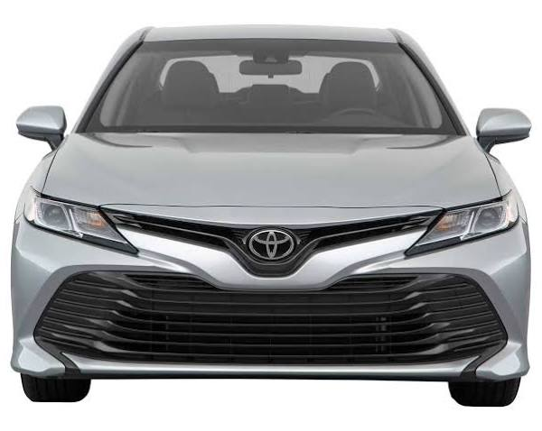
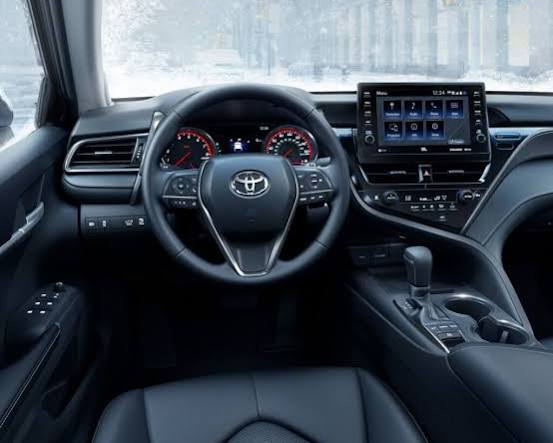
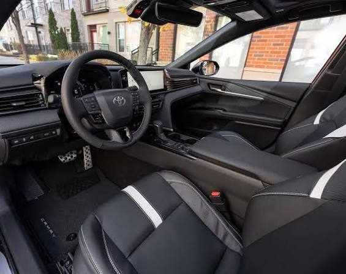

Toyota Camry Photo Gallery



1. Introduction
The Toyota Camry is a popular midsize sedan manufactured by Toyota. It is known for its comfort, reliability, fuel efficiency and modern design.
2. History
The Toyota Camry was first introduced in 1982. Over the years, it has developed into one of Toyota's most successful passenger cars. Different generations have introduced improved technology, safety and comfort.
3. Engine and Performance
The Toyota Camry is available with different engine options depending on the model year and market. Some versions use petrol engines, while newer models also offer hybrid technology.
4. Interior Features
The interior of the Toyota Camry is designed to provide comfort for both drivers and passengers. Features may include comfortable seats, touchscreen infotainment, air conditioning and modern safety technology.
5. Exterior Design
The Toyota Camry has a stylish exterior design with modern headlights, an attractive front grille and an aerodynamic body shape.
6. Specifications
- Manufacturer: Toyota
- Model: Camry
- Vehicle type: Sedan
- Fuel type: Petrol or Hybrid, depending on version
- Transmission: Automatic, depending on version
- Seating capacity: 5 passengers
7. Interesting Facts
The Toyota Camry is recognized worldwide for its reliability and comfortable driving experience. It has remained an important model in Toyota's passenger car range for decades.
8. Conclusion
The Toyota Camry is a practical vehicle that combines comfort, reliability and modern technology. It is suitable for individuals and families looking for a comfortable everyday car.